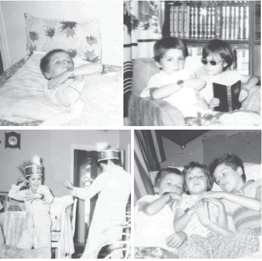

Arabalar
Telli Arabalar: O yılların belki de en revaçta, en zararsız, en fazla hayal gücünün işletildiği, zevke göre dizayn verilen ve hemen hemen en özgür oyuncaklarından biridir bu telli arabalar. En basit şekilde üretilen plastikten mamul arabaların camları bile aynı renktedir. Kapısı bacası açılmazdır. Tavanından bir telle bağlanır, bu telin direksiyon kısmı bükülerek oluşturulur. Arabaların üstüne raptiyelerle çeşitli süsler yapılır, bu sizin fiyakanızı arttıran bir durumdur. İşi çok daha iyi şekilde yapmak isteyenler, telden direksiyon yerine, bir önceki oyuncakları olan Çın Çın da teker olarak kullanılan malzemeyi, bu sefer direksiyon olarak değerlendirirlerdi.
Çok sayıda arabası olan arkadaşlarımız vardı. Bazılarına gıpta ile bakmışlığım, birkaç kere de bunları iştahla sürerken kaybolmuşluğum vardır.
Sünnet olduktan sonra dinlenme süresinin sonlarına doğru sokağa çıkar bu allı pullu arabalarımla, bir elimle eşofmanın ucunu tutar, bir yandan da arabayı sürekli yaptığım manevralarla sürmeye çalışırdım. Arada saatimi göstermekten de pek keyif alır, kolumun ucunu saatim görünsün diye hep katlardım. Işıklı ve hesap makineli olduğunu söylemiş miydim?

Kardeşimle sünnet sonrası, kolumuzda babamızın hediyesi hesap makineli saatler. 1983
Kurmalı Arabalar: Tenekeden mamul bu arabalar, yandan kurmalı, arkadan kurmalı ya da geriye doğru çekerek yapabileceğiniz basit mekanizmalı ürünlerdi. Modeller genelde kaba idiler, ama o dönemin çocukları için en güzel şeylerden biri idi.
Majorette: Şeffaf kutular içinde satılan bu küçük arabalar, Türk filmlerinin unutulmaz araba kaza sahnelerinde kullanılırdı. Küçük ebatlı bu arabalar ojelerle boyanır, yenilenir, güzelleştirilirdi. Kapıları genelde açılmaz, ama açılabilen modellerin tadına doyulmazdı.
Matchbox: Küçük arabalar silsilesinden bir materyal daha. Bu da Majorette gibi bir markadır aslında. Diğerine göre biraz daha kaliteli ve büyük ebatlarda üretilen bir türdür. Hayranları ve koleksiyoncuları olan bu arabalar, çocukluk günlerimizin en güzel hediye oyuncaklarındandır.
Su Tabancaları: Önceleri çok basit şekil ve malzemeli olan bu oyuncaklar, yine büyüklerin pek sevmediği, pek sulu bulduğu bir oyuncak çeşididir.
Kullanım şekli: bir su tabancası içerisine bol miktarda su doldurulur, üstüne sıkılınca en fazla rahatsız olacak kurbanlar seçilir ve bu su onların üstüne sıkılır.
Su tabancasına sahip olmadığınız zamanlarda ağza bir dolu su koyup, onunla ıslatmak da mümkündür. Halen kullanılan bir oyuncaktır.